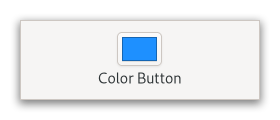

Gtk.ColorButton¶
Example¶
- Subclasses
None
Methods¶
- Inherited
Gtk.Widget (181), GObject.Object (37), Gtk.Accessible (15), Gtk.Buildable (1), Gtk.ColorChooser (5)
- Structs
class |
|
class |
|
|
|
|
|
|
|
|
Virtual Methods¶
Properties¶
- Inherited
Name |
Type |
Flags |
Short Description |
|---|---|---|---|
r/w/en |
|||
r/w/en |
|||
r/w |
Signals¶
- Inherited
Name |
Short Description |
|---|---|
Emitted to when the color button is activated. |
|
Emitted when the user selects a color. |
Fields¶
- Inherited
Class Details¶
- class Gtk.ColorButton(**kwargs)¶
- Bases
- Abstract
No
The
GtkColorButtonallows to open a color chooser dialog to change the color.An example
Gtk.ColorButtonIt is suitable widget for selecting a color in a preference dialog.
- CSS nodes
`` colorbutton ╰── button.color
╰── [content]
GtkColorButtonhas a single CSS node with name colorbutton which contains a button node. To differentiate it from a plainGtkButton, it gets the .color style class.Deprecated since version 4.10: Use [class`Gtk`.ColorDialogButton] instead
- classmethod new()[source]¶
- Returns
a new color button
- Return type
Creates a new color button.
This returns a widget in the form of a small button containing a swatch representing the current selected color. When the button is clicked, a color chooser dialog will open, allowing the user to select a color. The swatch will be updated to reflect the new color when the user finishes.
Deprecated since version 4.10: Use [class`Gtk`.ColorDialogButton] instead
- classmethod new_with_rgba(rgba)[source]¶
- Parameters
rgba (
Gdk.RGBA) – AGdkRGBAto set the current color with- Returns
a new color button
- Return type
Creates a new color button showing the given color.
- get_modal()[source]¶
-
Gets whether the dialog is modal.
Deprecated since version 4.10: Use [class`Gtk`.ColorDialogButton] instead
- get_title()[source]¶
- Returns
An internal string, do not free the return value
- Return type
Gets the title of the color chooser dialog.
Deprecated since version 4.10: Use [class`Gtk`.ColorDialogButton] instead
Signal Details¶
- Gtk.ColorButton.signals.activate(color_button)¶
- Signal Name
activate- Flags
- Parameters
color_button (
Gtk.ColorButton) – The object which received the signal
Emitted to when the color button is activated.
The
::activatesignal onGtkMenuButtonis an action signal and emitting it causes the button to pop up its dialog.New in version 4.4.
- Gtk.ColorButton.signals.color_set(color_button)¶
- Signal Name
color-set- Flags
- Parameters
color_button (
Gtk.ColorButton) – The object which received the signal
Emitted when the user selects a color.
When handling this signal, use [method`Gtk`.ColorChooser.get_rgba] to find out which color was just selected.
Note that this signal is only emitted when the user changes the color. If you need to react to programmatic color changes as well, use the notify::rgba signal.
Property Details¶
- Gtk.ColorButton.props.modal¶
- Name
modal- Type
- Default Value
- Flags
Whether the color chooser dialog should be modal.
- Gtk.ColorButton.props.show_editor¶
- Name
show-editor- Type
- Default Value
- Flags
Whether the color chooser should open in editor mode.
This property should be used in cases where the palette in the editor would be redundant, such as when the color button is already part of a palette.